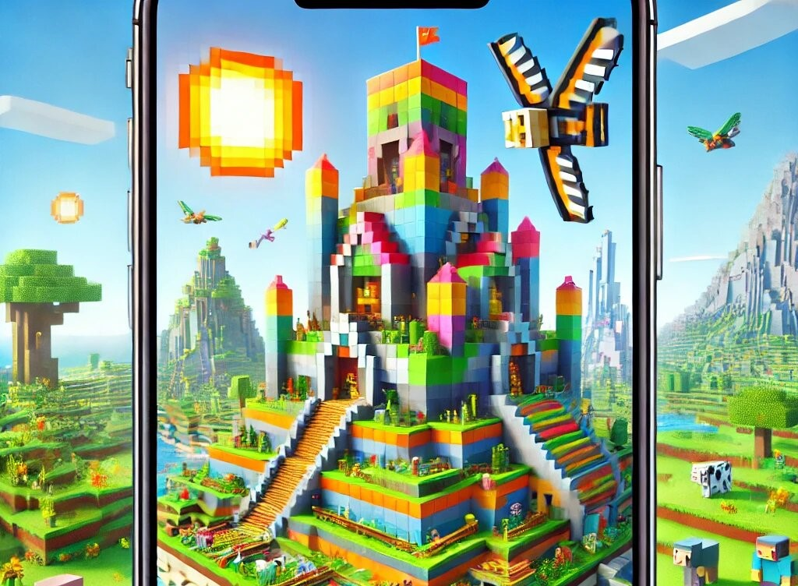

Minecraft APK: A Blocky World of Fun and Creativity
If you’ve ever heard of Minecraft, you know it’s not just a game; it’s a phenomenon. Players of all ages have been sucked into its blocky universe, and with the Minecraft APK, this exciting world is now available right in your pocket! Whether you’re on a bus, at a park, or just lying on your bed, you can dive into the pixelated paradise of Minecraft without needing a high-powered gaming PC. But what exactly is Minecraft APK, and why should you be excited about it? Let’s dive in.
What is Minecraft APK?
Minecraft APK is essentially the Android version of the famous game Minecraft. APK stands for Android Package Kit, which is the file format used for installing applications on Android devices. So, when you download the Minecraft APK, you’re getting the full Minecraft experience on your smartphone or tablet. Gone are the days of being glued to a desktop or gaming console to play Minecraft. With this APK, you can take your creativity and adventure anywhere you go.
A World of Endless Possibilities
One of the coolest things about Minecraft APK is the sheer amount of creativity it unleashes. The game lets you build anything and everything, limited only by your imagination. Want to create a castle, a roller coaster, or even a full-scale replica of your house? Go for it! The game’s block-based building mechanic means you can construct structures from simple materials like dirt and wood or go all-out with fancy stone and diamond blocks.
The sense of freedom in minecraft apk download is unlike any other game. You start in a world with nothing but your hands and a few basic tools. From there, it’s up to you to survive, explore, and create. The beauty of the game is that there’s no specific way to play it. Whether you’re the type of person who likes to gather resources and craft survival gear or someone who enjoys designing extravagant cities, Minecraft has something for everyone.
Explore Diverse Biomes and Unique Worlds
Minecraft is not just about building – it’s also about exploring. The Minecraft APK offers an enormous world to explore, with a variety of biomes. From lush jungles to freezing tundras, there’s no shortage of diverse environments to discover. Each biome has its own unique creatures, resources, and challenges, giving you an endless supply of exploration opportunities.
One of the game’s most thrilling aspects is the ability to venture underground. Minecraft APK has an intricate system of caves and tunnels filled with ores, treasures, and dangerous creatures. The deeper you go, the more you’ll encounter, but beware – hostile mobs like skeletons, zombies, and creepers are lurking in the shadows, waiting to surprise you.
But if mining isn’t your thing, don’t worry! You can also explore vast oceans, climb towering mountains, or venture through mysterious forests. The beauty of Minecraft APK lies in its exploration. No two worlds are ever the same, making every journey feel like a fresh adventure.
Survival Mode: Test Your Skills
Survival mode is where the true challenge of Minecraft APK comes into play. In this mode, your primary goal is to stay alive. You’ll have to gather resources, craft tools, and build shelter to protect yourself from the hostile mobs that come out at night. The survival aspect adds a layer of strategy and excitement to the game, making it perfect for those who enjoy a challenge.
At the beginning of each survival game, you’ll have to gather wood, craft basic tools, and establish a shelter before nightfall. As you progress, you’ll need to gather more advanced materials to craft stronger armor, weapons, and tools. You’ll also have to be on the lookout for food to keep your health up.
But it’s not just about surviving – it’s about thriving. As you become more skilled in Minecraft APK, you’ll be able to explore dangerous areas, like the Nether and the End, where even bigger challenges await. The game constantly pushes you to grow, and every accomplishment feels rewarding.
Creative Mode: Unleash Your Inner Architect
For players who aren’t too interested in survival challenges, Minecraft APK also offers Creative Mode. This mode allows you to access an unlimited supply of resources and the ability to fly around the world. It’s like being a god in the Minecraft universe, and the possibilities are endless.
In Creative Mode, you can build massive structures without worrying about running out of resources. You can construct entire cities, create pixel art masterpieces, or even design intricate redstone contraptions. There’s no limit to what you can achieve when you have all the resources you need at your fingertips.
Creative Mode also removes the threat of hostile mobs, making it perfect for players who just want to focus on building and creating. Whether you’re designing a dream home or a gigantic castle, Creative Mode gives you all the tools you need to bring your wildest ideas to life.
Multiplayer Madness: Play with Friends
Minecraft APK isn’t just a solo experience – it’s a multiplayer adventure too. With Minecraft’s online multiplayer feature, you can join forces with friends or strangers to explore, build, and survive together. Whether you’re building a shared city or battling it out in PvP (player vs. player) combat, multiplayer mode adds a whole new layer of fun to the game.
The best part? You don’t need a fancy gaming console or a powerful PC to play with others. All you need is your Android device and a stable internet connection. You can join servers, chat with players from around the world, and even start your own Minecraft community. Whether you’re collaborating on an ambitious project or simply hanging out and chatting, Minecraft APK makes it easy to connect with others.
Regular Updates: The Gift That Keeps on Giving
One of the best things about Minecraft is that it’s always evolving. Mojang, the developers behind Minecraft, constantly release updates that add new content, features, and improvements to the game. Whether it’s a new block, a new mob, or a new gameplay feature, Minecraft APK is always fresh and exciting.
These updates are often themed, and they bring seasonal content or new biomes, keeping the game exciting. For example, the recent “Caves and Cliffs” update added new cave systems, mountains, and biomes to explore. The “Wild Update” brought new mobs and blocks, making the world feel even more alive. With regular updates like these, there’s always something new to discover in the Minecraft world.
A Game for All Ages
One of the greatest things about Minecraft APK is its broad appeal. It’s a game that anyone, regardless of age, can enjoy. Whether you’re a 10-year-old who wants to build your dream house or a 50-year-old looking for a relaxing, creative outlet, Minecraft has something for everyone. The game’s simple mechanics make it easy for beginners to jump in, while its complex crafting and building systems offer plenty of depth for seasoned players.
And let’s not forget about the huge community surrounding the game. From YouTube tutorials to fan-made mods, Minecraft is a community-driven experience. Players share their creations, tips, and tricks, making it easy for new players to learn and grow in the game.
Modding: A World of Customization
If you’re looking to take your Minecraft APK experience to the next level, mods are where it’s at. Mods are fan-made modifications that change or add features to the game. Whether you want to add new mobs, change the game’s graphics, or introduce entirely new mechanics, there’s a mod for it. The Minecraft modding community is huge, and you’ll find thousands of mods available for download.
Installing mods on Minecraft APK is easy, and it adds a whole new layer of customization to the game. You can change the way the game looks, play with new mechanics, or even introduce new worlds and adventures to explore. Mods let you tailor Minecraft to your personal preferences, giving you an experience that’s entirely your own.
Affordable and Accessible
Another great thing about Minecraft APK is its affordability. While the game is certainly not free, it’s relatively inexpensive compared to other popular games. Plus, with the APK version, you don’t need to buy a new console or gaming PC. All you need is an Android device, and you’re good to go. This makes Minecraft APK one of the most accessible games available today.
Additionally, because Minecraft APK is available on the Google Play Store, you can easily install and update the game whenever new content becomes available. There’s no need to worry about physical discs or complicated installation processes – just download, install, and play!
In Conclusion
Minecraft APK is more than just a game – it’s an experience. Whether you’re a builder, an explorer, or a survivalist, there’s something for everyone in the blocky world of Minecraft. From its limitless creativity to its engaging multiplayer options, Minecraft APK is a game that offers endless fun, adventure, and opportunities to let your imagination run wild. So, if you haven’t already, go ahead and dive into the world of Minecraft APK – your next great adventure awaits!
And remember, even if you’re a seasoned player, there’s always something new to discover. After all, in Minecraft, the only limit is your imagination (and maybe your phone’s battery).